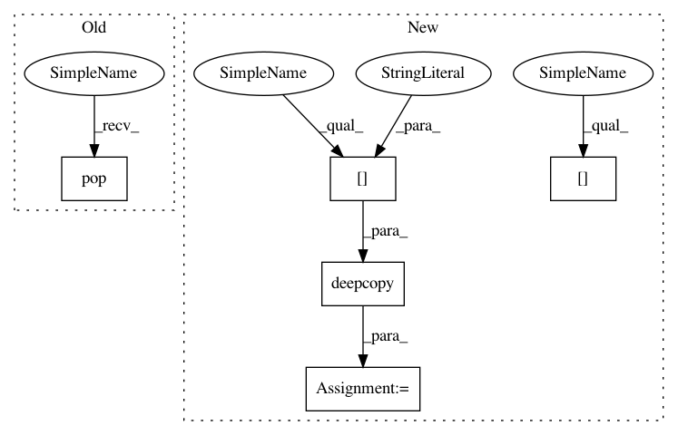

0e49e55d906660e5c9168447c77ebc6d917dda5c,softlearning/replay_pools/utils.py,,get_replay_pool_from_variant,#Any#Any#,19
Before Change
def get_replay_pool_from_variant(variant, env):
replay_pool_params = variant["replay_pool_params"].copy()
pool_type = replay_pool_params.pop("type", DEFAULT_REPLAY_POOL)
pool = POOL_CLASSES[pool_type](
observation_space=env.observation_space,
action_space=env.action_space,
After Change
def get_replay_pool_from_variant(variant, env, *args, **kwargs):
replay_pool_params = variant["replay_pool_params"]
replay_pool_type = replay_pool_params["type"]
replay_pool_kwargs = deepcopy(replay_pool_params["kwargs"])
replay_pool = POOL_CLASSES[replay_pool_type](
*args,
observation_space=env.observation_space,
In pattern: SUPERPATTERN
Frequency: 3
Non-data size: 5
Instances
Project Name: rail-berkeley/softlearning
Commit Name: 0e49e55d906660e5c9168447c77ebc6d917dda5c
Time: 2018-10-22
Author: hartikainen@berkeley.edu
File Name: softlearning/replay_pools/utils.py
Class Name:
Method Name: get_replay_pool_from_variant
Project Name: rail-berkeley/softlearning
Commit Name: 0e49e55d906660e5c9168447c77ebc6d917dda5c
Time: 2018-10-22
Author: hartikainen@berkeley.edu
File Name: softlearning/algorithms/utils.py
Class Name:
Method Name: get_algorithm_from_variant
Project Name: rail-berkeley/softlearning
Commit Name: 0e49e55d906660e5c9168447c77ebc6d917dda5c
Time: 2018-10-22
Author: hartikainen@berkeley.edu
File Name: softlearning/policies/utils.py
Class Name:
Method Name: get_policy_from_variant
Project Name: rail-berkeley/softlearning
Commit Name: 0e49e55d906660e5c9168447c77ebc6d917dda5c
Time: 2018-10-22
Author: hartikainen@berkeley.edu
File Name: softlearning/replay_pools/utils.py
Class Name:
Method Name: get_replay_pool_from_variant